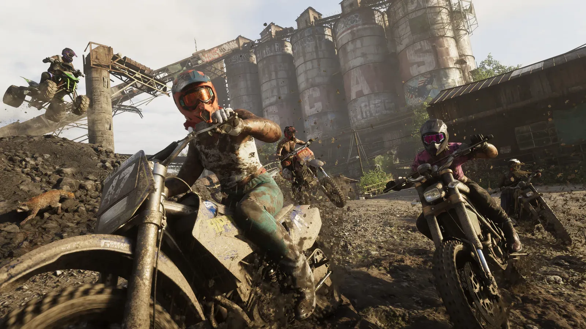
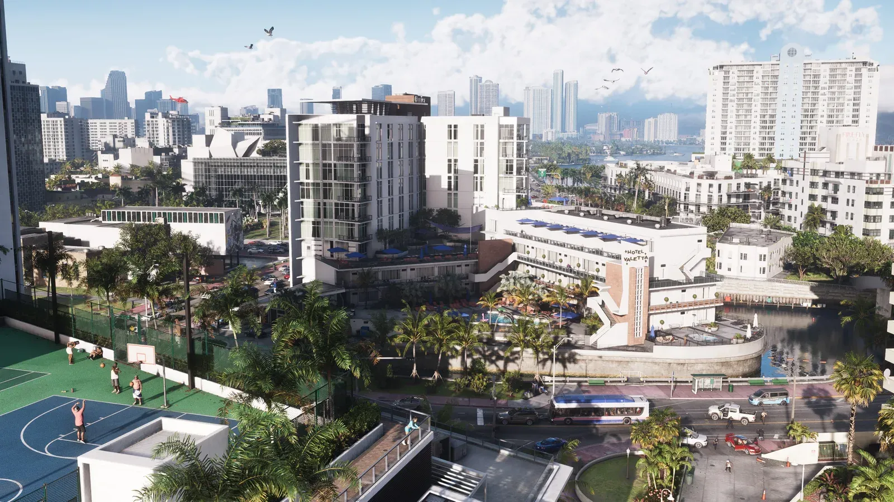

01开局必做 8 件事
刚进游戏别急着满地图乱跑。把这 8 件事养成习惯，后面能少吃很多亏——尤其是藏钱和存档两条，很多人前期不知道，吃了大亏。
- 序章后立刻手动存档：序章剧情长且不能跳过。第一次到 Jason 家就手动存一份，以后想重开有落脚点。
- 现金藏 Jason 卧室地板下：银行要等主线「Buck Me」才解锁。在此之前，被抓或死亡会掉身上的钱，地板下的藏匿点最安全。
- 修好 Jason 的房子再去接 Lucia：补墙、修楼梯、修屋顶、修阳台栏杆。这些是可选的，但会影响两人关系——去监狱接她之前做完。
- 记得去门口邮箱取钱：前期任务报酬发现金，会送到 Jason 家门口的邮箱，做完任务顺手去拿，再存进地板下。
- 车后备箱放一套备用衣服：警察会记住你的外貌和穿搭。被追时用后备箱换整套衣服，比帽子墨镜管用得多，能更快甩掉通缉。
- 早点摸熟手机：按方向键上打开。WAiNK 能扫描车辆有没有追踪器；BuckMe 是银行；通讯录里有修车师傅。睡觉跳过夜晚也靠家里的床。
- 三大属性尽早练：力量（生命上限）、有氧（耐力）、专注（子弹时间）。本章有免费器械，具体见下一节。
- 别乱花起始资金：主线有些任务要你凑几千美元（比如存钱、买花），把钱花光会卡进度。奢侈品往后放。
💡 补充：开车先在普通路线练加速、刹车、转弯、停车，别一上来拿路沿当跳台。燃油车要去加油站、电动车要充电，长途前先补能。
02五大系统速成


① 双主角切换
第一章主要操控 Jason。推进到第二章、完成任务「Coffee Break（咖啡时间）」后，开放世界按住 方向键右+R1/RB 即可在 Jason 与 Lucia 间自由切换；按 △/Y 可呼叫搭档会合、一起做任务提升好感。
② 三大属性
- 力量（生命上限）：Jason 家露台有免费举重器材，在家就能练。
- 有氧（耐力）：跑步、骑车、游泳、健身房跑步机。力量和有氧不练会慢慢退化，要隔几天练一次。
- 专注（Focus）：手柄同时按 L3+R3 开专注模式，枪战/潜入时高亮敌人与物资、瞄准时放慢时间。钓鱼、打台球也能提升，练满后永久保留。
💡 锻炼要做完当前一组再退出，否则收益清零；练完喝蛋白昔/吃蛋白棒加速恢复。想快速刷专注：盖尔霍恩港东北角罗杰斯牧场射击场，花 $5 买通行证，反复刷市场靶场初级挑战，每次约 5 秒。
③ 通缉与犯罪档案
GTA6 回归 6 星通缉，但机制大改——不是开出通缉圈就安全。警察会记录你的外貌、穿搭、座驾与武器，通过目击者和街边监控追踪。换衣服、换车、把赃车重新喷漆，比硬逃有效；偷来的车可能带 GPS，别长时间开。
犯罪档案（Criminal Profile）：两人分开计算，记录你作案是专业还是过度暴力。干净、低伤亡的任务压低它，乱开枪会抬高。它会影响 NPC 与警察的反应强度、剧情事件，甚至结局（见游戏介绍页的全结局解析）。
④ 销赃赚钱
搜刮到的赃物装进随身背包或车后备箱，开车到地图上的绿色黑市图标，投进指定容器变现。不同黑市商人对药品、珠宝、带标记钞票的收购价不同，悬停图标先看价再卖。第二章做「Moses」后，用手机 WAiNK 扫描车辆确认无追踪器，再开去给摩西交货。三人同行时还能让搭档自动开车去销赃。
⑤ 存档
本作没有任务回放，只有 15 个手动存档位+1 个自动存档位。自动存档一般在主线任务、大型支线、大额消费、死亡/被捕后触发，不是定时、也不会在任务中途。养成习惯：每章开头、大型抢劫前、关键抉择前，各手动存一份。想体验不同结局，就靠这些存档分流。
第一章 · 天堂般的地方
开篇铺人物和地图：Jason、Cal、Brian 一伙在群岛讨生活，中间去监狱接 Lucia。这章的重点是熟悉驾驶、射击、通缉和存钱，同时把 Jason 的家修好。
全章任务清单（22 个）
| # | 任务（中文 / 英文） | 要点 |
|---|---|---|
| 序 | 序章 / Prologue | 开场剧情，跟随守卫、露西亚闪回。看完立刻存档。 |
| 01 | 钓鱼去 / Gone Fishing | 跟飞机找包裹，去营地救 Donnie。（下方有手把手） |
| 02 | 整备 / Gear Up | 准备装备，熟悉武器与物品轮盘。 |
| 03 | 只是擦伤 / Just a Scratch | 处理伤口，学习治疗操作。 |
| 04 | 实验室费用 / Lab Fees | 穿过精品店，把包送到 Brian 的储物柜。 |
| 05 | 多余的关注 / Unwanted Attention | 追回凤凰跑车并甩掉通缉。 |
| 06 | 管道工程 / Pipework | 找 Mandy、修水槽（找皮搋子和扳手）。 |
| 07 | 嘿，阿诺德！/ Hey Arnold! | 雷达站、大桥追逐，注意“放过”选项。 |
| 08 | 岛屿之梦 / Island Dreams | 找金币，把 Dobbs 送回船上。 |
| 09 | 风水 / Feng Shui | 和 Cal 搬家具（双扳机抬电视/沙发）。 |
| 10 | 回家 / Coming Home | 去监狱接 Lucia，回 Rusty Anchor。（关键节点） |
| 11 | 撞我 / Buck Me | 两人去银行，解锁家庭储蓄账户——从此钱更安全。 |
| 12 | 替唐尼善后 / Clean Up After Donnie | 去草河取包裹、清理拖车。 |
| 13 | 脚踏实地 / Down to Earth | 开水上飞机空投、藏包。 |
| 14 | 晴空 / Clear Skies | 护送 Pilot Pete，第二个机场找 Donnie。 |
| 15 | 白天出狱 / Day Release | 找乘客名单，跟车队到 NINE1NINE。 |
| 16 | 沼泽困局 / Swamped | 沼泽追击，救 Lori。 |
| 17 | 唐走了 / Don Gone | 找包，完成拖车清理。 |
| 18 | 重新校准 / Recalibration | 和 Cal 钓鱼、烤鱼、回家。 |
| 19 | 游客陷阱 / Tourist Trap | 找 17 号储物柜，到 Cal 的码头。⚠️ 见下方存档警告 |
| 20 | 甜蜜的家 / Home Sweet Home | 见 Andy，前往罪恶都市医院。 |
| 21 | 放电时间 / Discharge Time | 203 房间、救护车逃脱，本章结束。 |
🎯 手把手：01 钓鱼去（Gone Fishing）· 第一章首个任务
- 跟飞机找包裹：开船跟着粉色标记。看不清掉落物时按 L3+R3 开专注。靠近时 Cal 会喊减速，慢下来让他用钩子捞包裹。
- 观察码头、驶向 Sunrise 房车公园：粉色路线带你进狭窄水道，右手是石岸、左手水里有个白牌子。用望远镜找码头上方
“Welcome to Paradise”的牌子。 - 搜营地找小屋：沿粉色区域穿过铁丝网和大白罐。目标会变成
“想办法进入小屋”——绕到侧面那扇钉着木板、旁边有藤蔓的浅色门进。 - 解开 Donnie、拿 Zombix：Donnie 在屋内右后方架子旁的地上，靠近按 △ 解开；再按提示捡起发光玻璃缸旁的 Zombix。出门前先按住 L1 + □ 治疗。路上红白拖车旁还能捡到 W-22 步枪。
- 上水上飞机逃离：找堆着绿色渔网的木箱旁的栈桥，登上蓝白水上飞机，等 Donnie 上机再起飞。R2 加速，起飞提示出现时把左摇杆往下压。
- 降落、转场、送 Cal 回家：先在码头附近水面降落，再沿水面开到 Brian 的码头。过场后开 Jason 的皮卡送 Cal 回家，再回自己家。
- 回家后去邮箱取钱：门口银色信箱按 Collect 领取任务报酬（记录里 Donnie 和 Brian 分别汇了钱）。
💡 如果 Donnie 在码头死了，重试后会回到木栈桥入口、Donnie 复活，前面的救人和拿 Zombix 进度保留。
🎯 手把手：10 回家（Coming Home）· 接 Lucia 出狱
主线剧情节点，去 Hamlet 监狱接 Lucia，然后一起到 Rusty Anchor。去之前建议：①已修好房子（影响关系）；②身上留够现金；③手动存档。跟随粉色标记走即可，注意过场后的驾驶路段别把车撞坏。
第二章 · 失落的天堂
这章节奏放缓：两人搬进汽车旅馆，建立自己的小生意和销赃渠道。关键收获是「Moses」任务后的第一辆私人载具注册，以及「Coffee Break」后解锁双主角自由切换。去罪恶都市前有个资金门槛，注意攒钱。

全章任务清单（13 个）
| # | 任务（中文 / 英文） | 要点 |
|---|---|---|
| 01 | 包里是什么？/ What's in the Bag? | 读纸条、收集物资、问止痛药。 |
| 02 | 救护车追逐 / Ambulance Chaser | 开 Street Blazer 追救护车。 |
| 03 | 刚搬进来 / Just Moved In | 安顿住处。 |
| 04 | 闺蜜之旅 / Girls' Trip | 10 号房找 Vicki，跟 Delights 和 Dunk 走。 |
| 05 | 摩西 / Moses | 把车带给摩西，注册第一辆私人载具（下方手把手） |
| 06 | 日常代步 / Daily Driver | 为摩西偷 Crawler 等车。 |
| 07 | 灌篮 / Slam Dunk | 找止痛药。 |
| 08 | 早餐跑腿 / Breakfast Run | 查看 Jason 状况。 |
| 09 | 咖啡时间 / Coffee Break | 完成后解锁双主角自由切换。 |
| 10 | 午后欢愉 / Afternoon Delight | 抢 Vicki 老板。 |
| 11 | 刺激乡巴佬 / Thrillbillies | 比利任务线（部分清单算支线）。 |
| 12 | 扭腕砸抢 / Twist Wrist, Smash, Grab | 和比利干活（部分清单算支线）。 |
| 13 | 退房 / Checking Out | 搬去罪恶都市，本章结束。 |
📌 各攻略对任务总数口径略有差异：Polygon 记 13 个，GTA6DATA 记 11 个（把比利两条算作支线），GamesRadar 把部分任务标为可选。按游戏内「剧情回顾」显示为准。
🎯 手把手：05 摩西（Moses）· 注册第一辆私人载具
- 接任务、认识摩西：他是修车师傅，会发短信给你车辆线索。
- 按线索找车：如 Canis '82 Crawler（Gellhorn Avenue 车场，记录报酬约 $945）、Declasse Yosemite 1500（Bastion Street，约 $1,850）。
- 偷车前先扫描：用手机 WAiNK 应用确认没有追踪器的车——带追踪器的车难注册也难卖。
- 开去交给摩西：第一辆注册免费，挑一辆你真想长期保留的，别随便交第一辆捡来的车。
- 解锁 Scooter Bros：之后手机可用该应用叫车/取回被扣车辆，升级高级会员每天有免费次数。
来源：18183 中文全任务流程、GTA6DATA、游侠网新手指南。核对日期 2026-11-23。
第三章 · 罪恶都市
正式进入 Vice City，结识 Dre'Quan、Boobie Ike、Raul 等新势力，接触珠宝、车辆、银行等大生意。这是全游戏最长的一章，核心是「卡特尔劫案（The Cartel Heist）」这条大抢劫线——前面一堆准备任务都指向它。
全章任务清单（26 个）
| # | 任务（中文 / 英文） | 要点 |
|---|---|---|
| 01 | 欢迎来到罪恶都市 / Welcome to Vice City | 抵达大城市。 |
| 02 | 庄家的选择 / Dealer's Choice | 去见 Dre'Quan（仅 Jason）。 |
| 03 | 可疑来源 / Dubious Provenance | 参观古董店。 |
| 04 | 妈咪最懂 / Mami Knows Best | 和 Mia 叙旧（仅 Lucia）。 |
| 05 | 南莱昂尼达房地产 / South Leonida Real Estate | 买房/地产相关（仅 Lucia）。 |
| 06 | 泰隆 / Tyrone | 和 Tyrone 交谈（仅 Jason）。 |
| 07 | 来呀小猫咪 / Here, Kitty Kitty | Tyrone 相关。 |
| 08 | 猫砂实验室 / Kitty Litter Labs | （部分清单算支线） |
| 09 | 租车服务 / Car Service | 为 Raul 偷车（仅 Lucia）。 |
| 10 | 头牌 / Top Billing | 看真正的 Dimez。 |
| 11 | 波比时间 / Boobie Time | 和 Boobie 交谈（仅 Jason）。 |
| 12 | 第一印象 / First Impressions | 和 Raul 会面。 |
| 13 | 跨城车流 / Crosstown Traffic | 见 Raul（Lucia）/ 见 Karim（Jason）。 |
| 14 | 信用审查 / Credit Check | 见 Raul 的团队。 |
| 15 | 替兰迪偷佐鲁索 / Steal the Zorrusso for Randy | 克隆钥匙、偷跑车。 |
| 16 | 辛弗龙特拉国家银行 / Sinfrontera National Bank | 勘察银行（劫案准备）。 |
| 17 | 安保专家 / Security Expert | 劫案准备。 |
| 18 | 生死与共 / Ride or Die | 见 Dre'Quan（仅 Jason）。 |
| 19 | 公司财产 / Company Property | 见 Brian。 |
| 20 | 缺失的一环 / The Missing Link | 见 Andrea（仅 Lucia）。 |
| 21 | 安全词 / Safe Word | 偷练习用保险箱。 |
| 22 | 虱子 / Cooties | 拍摄音乐视频。 |
| 23 | 砖墙 / Bricked Up | 返回公寓。 |
| 24 | 隐藏费用 / Hidden Charges | 策划室会面、准备炸药。 |
| 25 | 卡特尔劫案 / The Cartel Heist | 本章高潮大抢劫（下方手把手） |
📌 部分清单还含「Caught Slipping（被抓现行）」「被抓现行/抢劫策划」等准备步骤，不同网站对是否单列有分歧；GTA6DATA 列 26 个，GamesRadar 列 27 个。以游戏内显示为准。
🎯 手把手：卡特尔劫案（The Cartel Heist）· 第三章高潮
- 规划室启动：在 Raul 的策划室看完简报、确认队员分工，跟着基站提示前往银行。等 Karim 发信号再进，别提前冲。
- 开下层通道去金库：先和队友控制大厅，再跟金库小队下楼，完成警报与闸门的操作提示，解决守卫后上到金库门。
- 装炸药、躲掩体：在标记的金库门安放炸药，然后退到指定掩体后再等爆炸（强行站原地会失败）。金库开了记得搜刮存款箱。
- 用 SWAT 卡车+烟雾撤离：按标记的防暴车和烟雾提示冲出去，到入口处上车。
- 救 Nicole 回车上：到 Jason 一侧找 Nicole，按提示开 Brigade，跟 Lucia 的掩护目标走，通路打开后把 Jason 和 Nicole 都送上大巴。
- 混入游客脱身：按治疗和逃离提示行动，下车后混进旅游团——前面动静闹得再大，最后也得装成普通游客才走得掉。
💡 这个劫案前置任务多（勘察银行、安保专家、保险箱、准备炸药），建议每完成一个准备就手动存一次档，失败时不用从头再来。
第四章 · 罪恶都市，宝贝
势力做大后的高端局：企业间谍、联邦监视、海运截击，直至 VCIA 突袭。这章和第三章几乎一样长，任务间的准备链更长，存档尤其重要。

全章任务清单（25 个）
| # | 任务（中文 / 英文） | 要点 |
|---|---|---|
| 01 | 海洋海滩 / Ocean Beach | 新阶段开场。 |
| 02 | 另一种生活 / Another Life | 生活/关系推进。 |
| 03 | 泳池日 / Pool Day | 剧情推进任务。 |
| 04 | 公司用车 / Company Cars | 和礼宾员交谈。 |
| 05 | 请律师 / Lawyer Up | 见 Abe Gonzalez。 |
| 06 | 派对狂欢 / Party Hard | 做私人安保。 |
| 07 | 重物搬运 / Heavy Lifting | 体力活任务。 |
| 08 | 拍照/射击 / Photo/Shoot | 拍宣传照。 |
| 09 | 增肌 / Making Gainz | 见 Raul / 训练计划。 |
| 10 | 小心点 / Watch It | 监视相关。 |
| 11 | 现金注入 / Cash Injections | 资金运作。 |
| 12 | 业余时间 / Amateur Hour | 剧情推进。 |
| 13 | 脏活 / Dirty Work | 清理类任务。 |
| 14 | 行李太多 / Too Much Baggage | 机场相关（有专门攻略）。 |
| 15 | 保姆历险记 / Adventures in Babysitting | 护送类任务。 |
| 16 | 新证据 / Fresh Evidence | 情报收集。 |
| 17 | 权力游戏 / Power Play | 势力博弈。 |
| 18 | 儿戏 / Child's Play | 剧情推进。 |
| 19 | 头条人物 / Headliners | 媒体相关。 |
| 20 | 近距离监视 / Close Surveillance | 跟踪监视。 |
| 21 | 交付方式 / Delivery Method | TSS 渗透。 |
| 22 | 团队建设 / Team Building | 队友相关。 |
| 23 | 全包餐饮 / Fully Catered | 准备任务。 |
| 24 | VCIA 突袭 / VCIA Takedown | 本章高潮。 |
| 25 | 日落 / Sunset | 收尾。 |
| 26 | 从零开始 / Starting From Zero | 通向第五章。 |
📌 部分清单把 VCIA 线前后的短任务（如 Rafa 绑架、联系 Nate、结账等）单列，任务数会有出入。「Starting From Zero」结束后进入最终章，务必提前存档。
来源：18183 中文全任务流程、GTA6DATA。核对日期 2026-11-23。
第五章 · 世界之巅，妈
最终章：所有恩怨收束，背叛、全州追捕、高潮结局。任务数最少但分量最重。最后的抉择决定 Jason 和 Lucia 的命运——多种结局的触发条件见游戏介绍页的「全结局解析」。
全章任务清单（7 个）
| # | 任务（中文 / 英文） | 要点 |
|---|---|---|
| 01 | 手中之鸟 / Bird in the Hand | 终章开场。 |
| 02 | 夺回自由 / Taking Liberties | 剧情推进。 |
| 03 | 罪恶宝贝 / VC Baby | 剧情推进。 |
| 04 | 打包带走 / Doggie Bag | 剧情推进。 |
| 05 | 野蛮荣耀行动 / Operation Savage Glory | 大型行动。 |
| 06 | 保护性监禁 / Protective Custody | 终章前的收尾任务。 |
| 07 | 路的尽头 / The End of the Road | 最终任务·多结局分歧（下方手把手） |
🎯 手把手：路的尽头（The End of the Road）· 最终任务
- 码头准备：在 Brian's Marina 打开装备提示，离开区域，坐标记的直升机前往大楼。
- 攻顶层公寓、下载文件：走屋顶和室内路线，等
“Download Complete”再换目标，别中途离开终端。 - 取回原始硬盘：回到标记的 Giorgio 办公室。
“复制文件”和“拿原始硬盘”是两个独立目标，别漏。 - 找到并解救 Lucia：跟救援标记走、解除束缚。失败重试时会从车库上层、目标
“Get to Lucia”处继续。 - 一起找出口、甩掉直升机：跟标记撤离，按开车路线穿过直升机追击，再走电梯和海岸公路段。
- 前往机场、进入大桥段落：跟标记到机场，然后是大桥封锁路段。这里是结局分歧点——门德斯交易、屋顶选择、大桥上「Swim for It / No Surrender」的不同选项，导向不同结局。
💡 想集齐多结局？进最终任务前一定手动存档。通关后游戏会把你带回终章任务之前，Jason 和 Lucia 在自由模式可用，终章任务留在地图上可反复尝试。想改犯罪档案或好感度，得读更早的存档重玩。各结局的完整触发条件见 GTA6 游戏介绍页 · 全结局解析 →
来源：GTA6DATA 终章打法、Polygon 任务清单。核对日期 2026-11-23。
08存档避坑与通关后
🗂️ 必须手动存档的 5 个节点
- 序章结束后：第一次到 Jason 家，存一份基础档。
- 第一章「Tourist Trap」开始前：三连任务锁死，存了才能回头补支线。
- 每章开头：15 个手动位，够你每章留一份。
- 大型抢劫/终章任务前：卡特尔劫案、VCIA 突袭、路的尽头——失败重来很费时。
- 关键抉择前：想体验多结局，就在分歧点前分开存。
🏁 通关之后
打完主线不会强制结束：游戏把你带回终章之前，两人留在自由模式，终章任务仍在地图上可重玩以尝试其他结局。通关还会解锁作弊菜单和 100% 完成清单。想补齐支线、抢劫机会、陌生人怪咖任务，这之后有的是时间——100% 通关整体要 200 小时以上。
各站对任务总数、部分任务是否算主线存在口径差异（总数 91-95 不等），本站采用主流的 93 个 / 5 章口径。本攻略为玩家整理、非 Rockstar 官方内容，游戏版本更新后细节可能变化，以游戏内实际表现为准。图片为 Rockstar 官方公开实机截图，版权归原权利方所有。